背景
之前很羡慕别人能够有属于自己的个人博客，自己也想拥有，搭建个人博客首先就要有一台个人服务器，要搭建个人服务器得先有公网ip，然而目前公网IPv4资源紧缺，部分运营商是不会随意将公网ip提供给个人的，这就有些难受了
偶然发现的ipv6
今天在网上冲浪的时候，突然看到一篇文章，文章中提到“十四五”期间IPv6规模部署任务和目标——2025年底县级以上政府网站完成率达到95%以上。说明在不久的未来，ipv6将替代ipv4成为主流，在查询了相关资料以后，发现目前大多数网络设备都是支持ipv6的，并且由于ipv6非常广泛，不需要使用nat去区分内外网，电脑上获取到的ipv6可以直接在公网上访问。
首先我们判断自己的网络有没有ipv6，直接在命令窗口中输入ipconfig
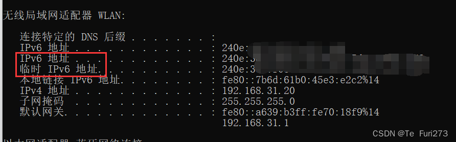
如果出现ipv6地址，并且开头不是fe80，那么此时你就已经获取到了一个公网ipv6地址了，如果没有，那么请打开路由器配置网页，一般直接在浏览器中输入网关ip就可以了，登录账号以后，打开路由器的ipv6功能，这里用的是小米的路由器，其他的路由器大家可以自行搜索如何开启ipv6
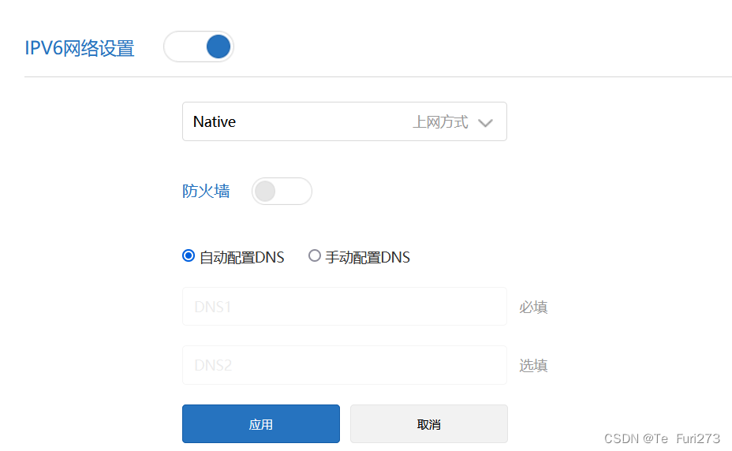
在打开ipv6功能以后再次输入ipconfig查看是否获取到ipv6的地址，也可以通过访问ipv6测试来看自己是否开启ipv6功能
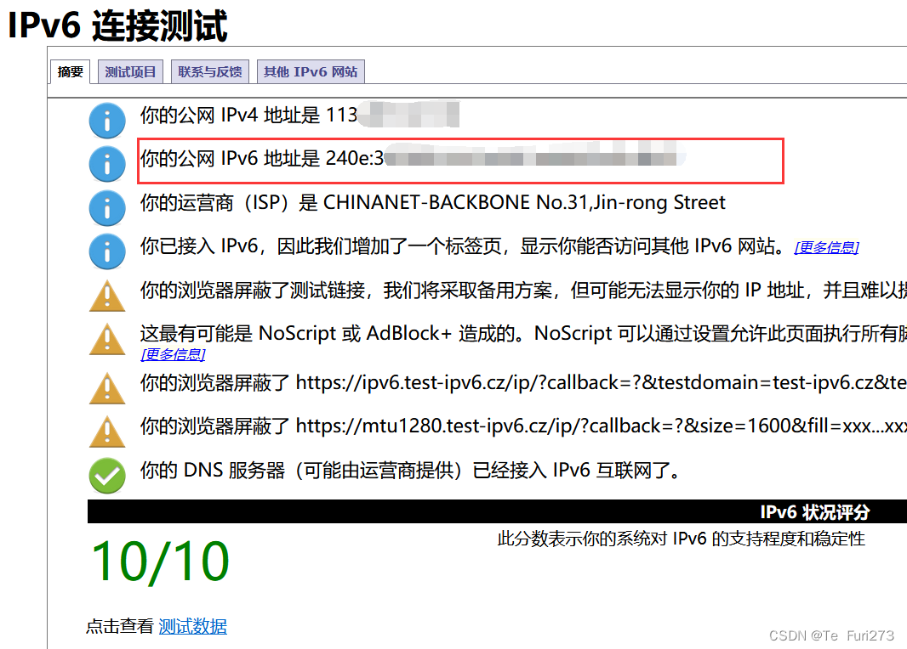
到这里路由器的相关配置已经结束了，但我们还是无法在公网中访问到ipv6，这是因为营业商的光猫中对ipv6进行了保护，禁止外网访问我们的ipv6地址，所以我们要对光猫进行配置，电脑浏览器访问192.168.1.1，这里要输入超级管理员的账号和密码登录才能使用高级功能，而如何获取超级管理员的账号和密码大家可以自行搜索，这里以电信为例登录
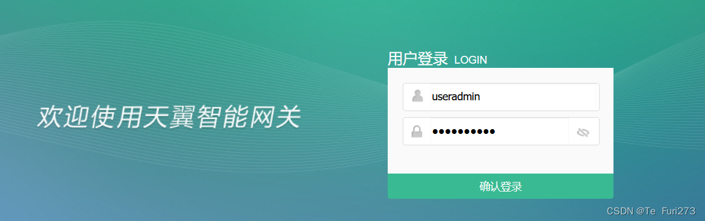
在安全——防火墙中将防火墙等级改到低并关闭启用ipv6 session,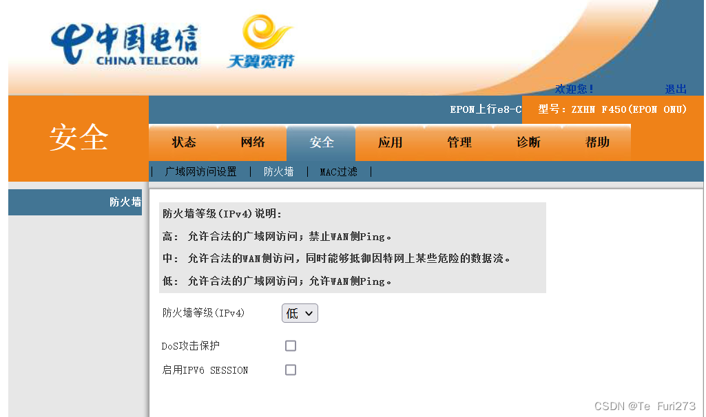
在网络设置中选择INTERNET连接并选择ipv4&ipv6
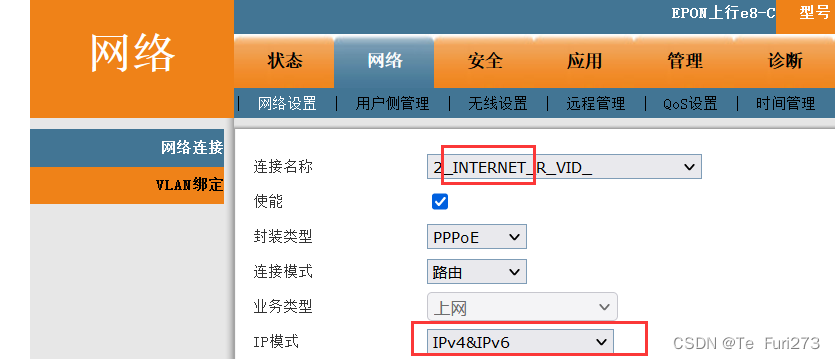
ipv6配置
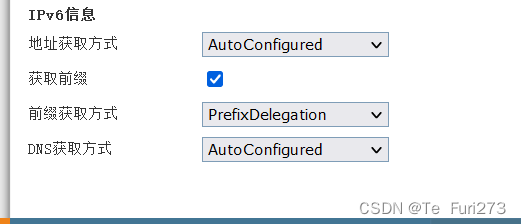
在状态——网络侧信息中查看ipv6的地址如下图所示则说明配置成功
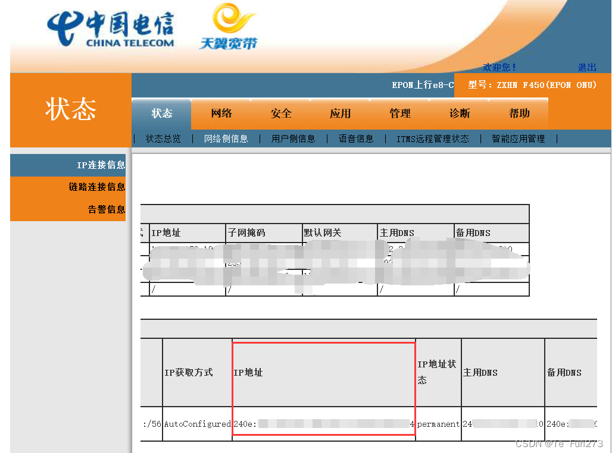
到这里光猫的配置就结束了
然后我们开始测试，这里使用phpstudy开启apache的80服务
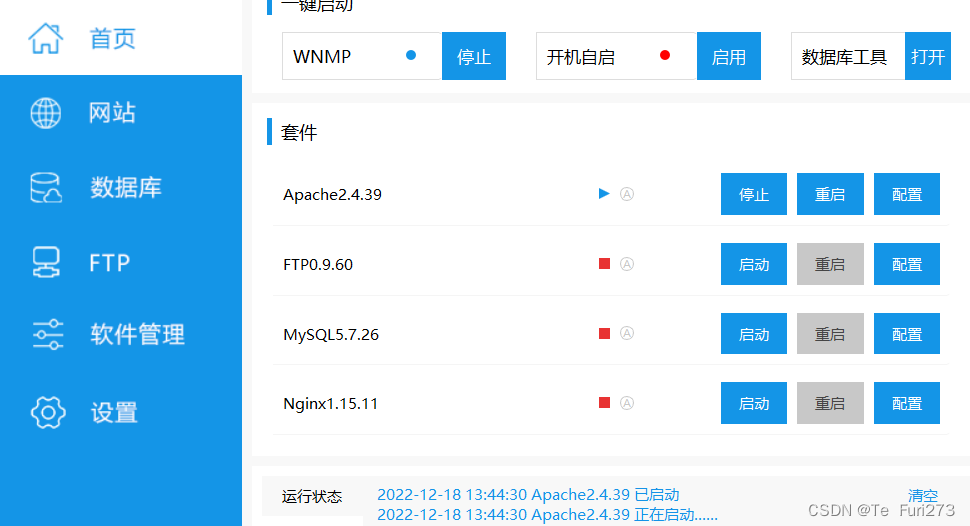
设置防火墙的入站规则，开启80端口
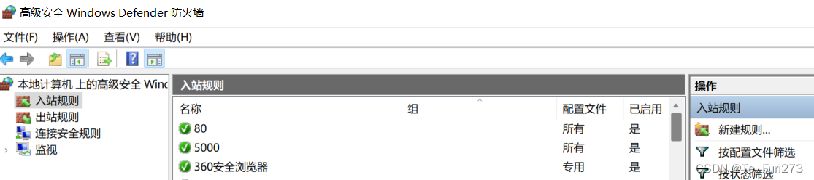
通过IPV6版_在线tcping_tcp延迟测试_持续ping_禁ping_tcping_端口延迟测试
对自己的ipv6进行测试
全都响应了就说明ipv6公网配置成功了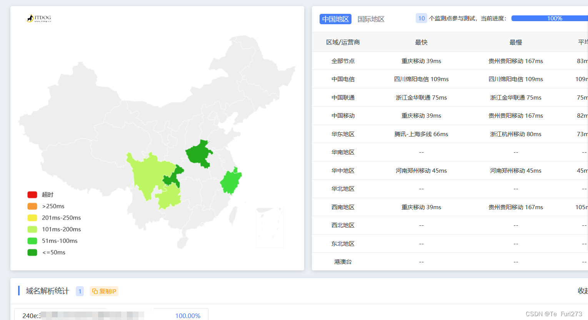
到这里我们就成功获得了一个能在公网访问的ipv6地址，可以在相关的端口配置服务
（记得之前三大营业商为了防止服务器满天飞而产生的监管困难，将ipv6的80、443、8080等常见端口给封锁了，但刚才测试了说明ipv6的80端口是可用的，大家有时间可以试试其他的端口）
一些小缺陷
1.目前暴露在公网的ipv6并不是所有人都可以访问的，只有自己的设备开启了ipv6功能上网才可以访问（一般手机使用移动数据连接是可以访问ipv6的，如果是连接wifi的话需要配置路由器开启ipv6功能）大家可以访问IPv6地址查询 | IP查询(ipw.cn)进行测试自己的设备是否能访问ipv6
2.当前电脑使用的ipv6地址是临时ipv6地址,每一次重启电脑或者重新联网临时ipv6地址都会刷新
（可以在命令窗口中输入 netsh interface IPv6 set privacy state=disable 关闭）
接下来的目标
1.购买域名，通过域名访问公网ipv6
2.在linux系统中配置ipv6公网地址